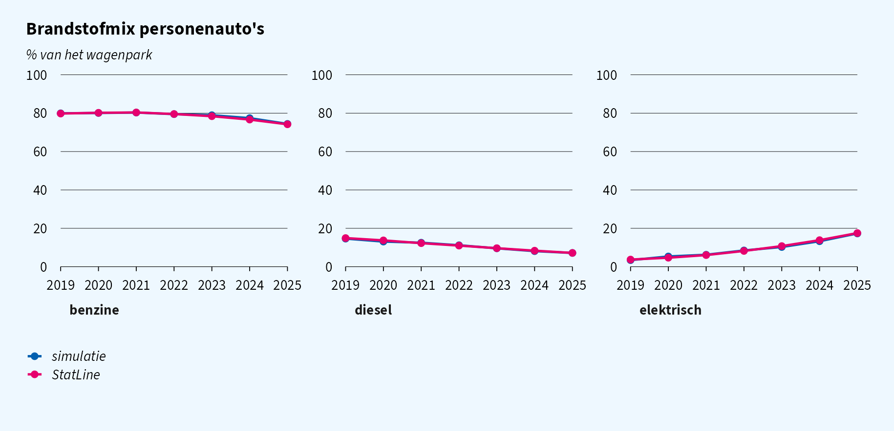
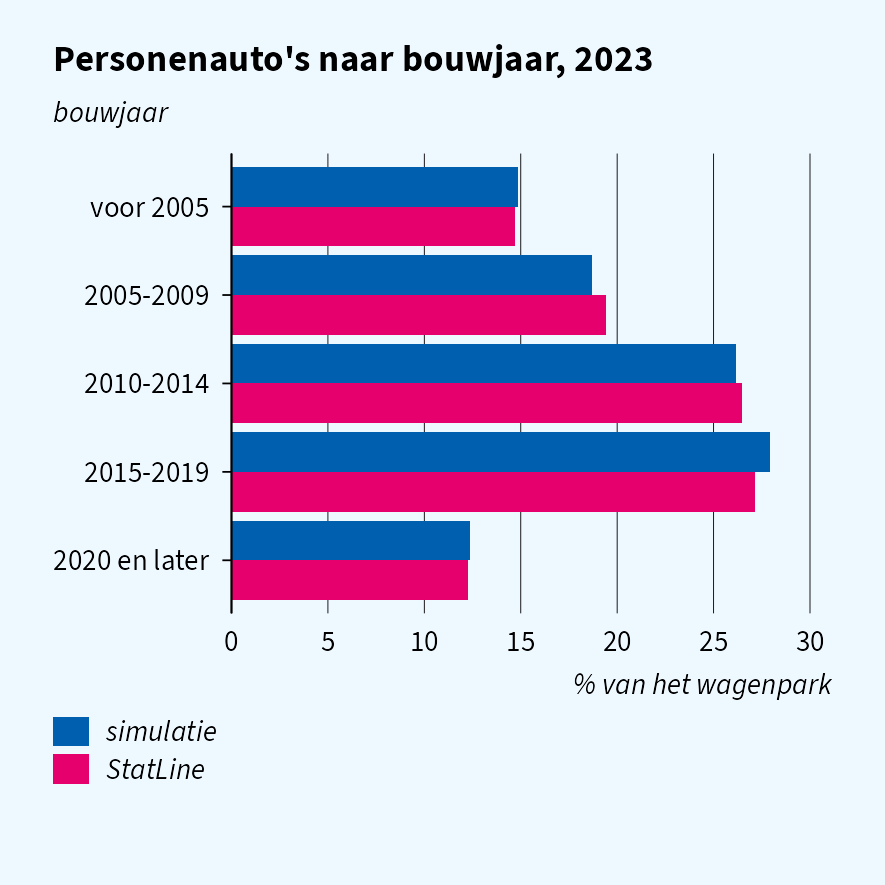
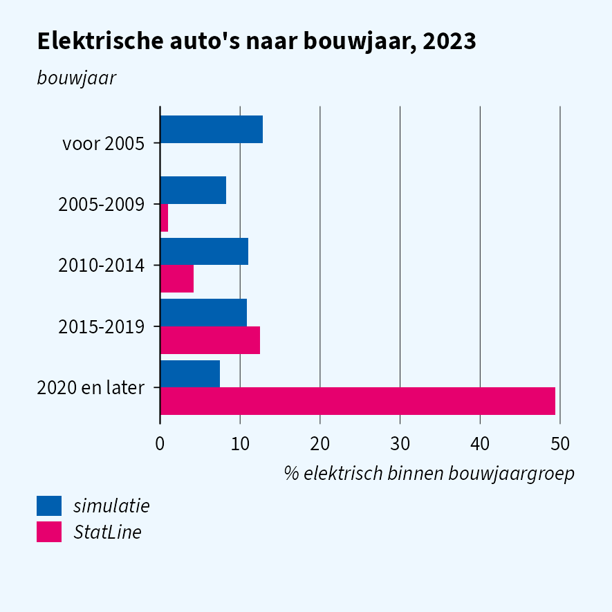
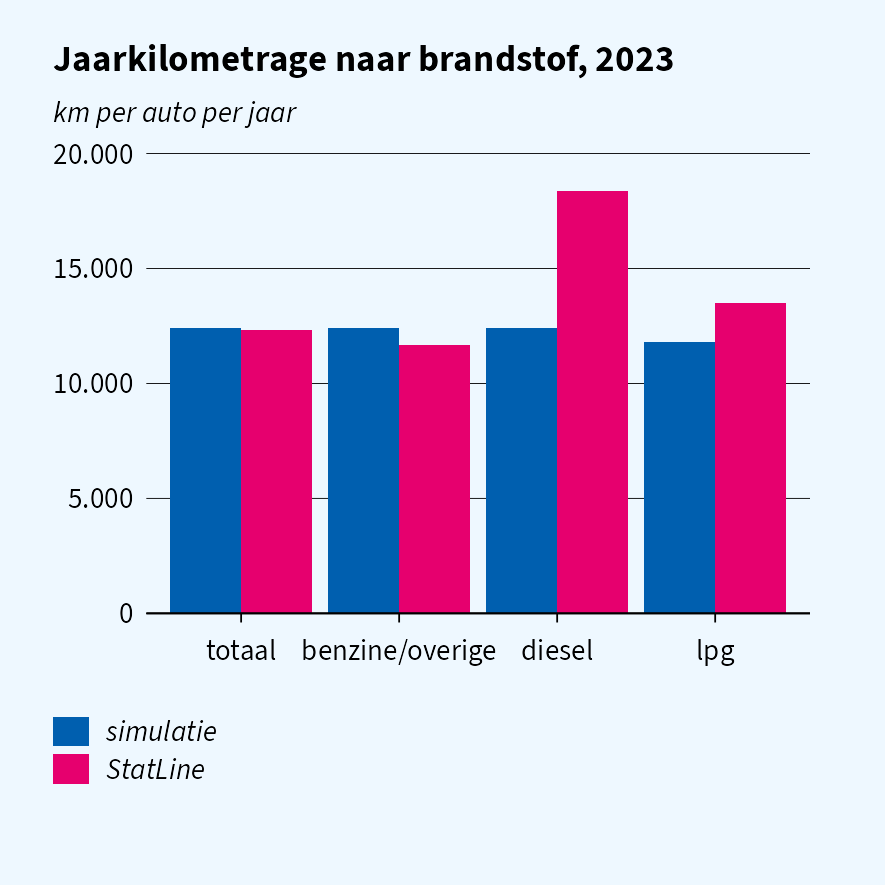
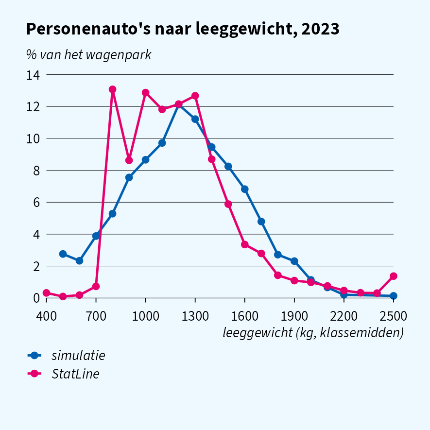
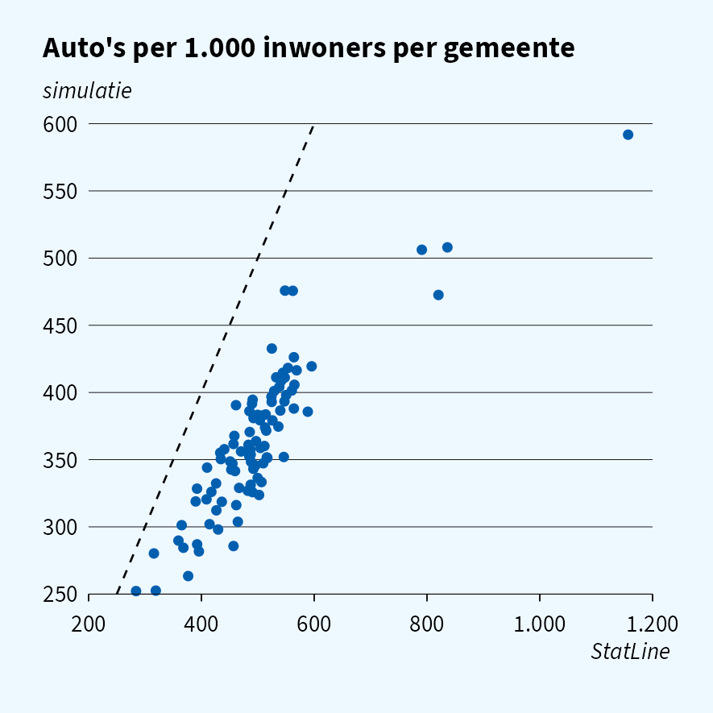
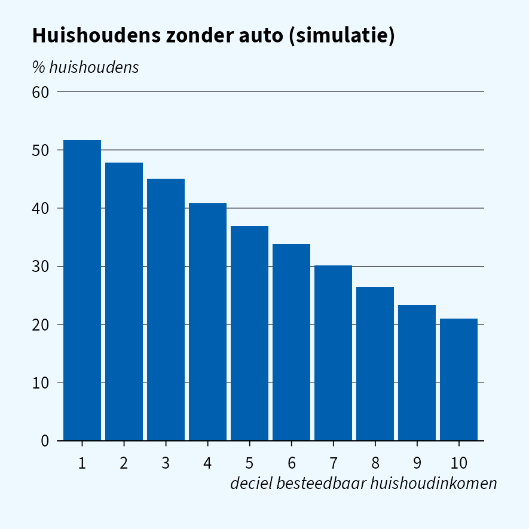

How fast is the Dutch car fleet electrifying, and how does that differ by vehicle age, kilometres driven and region?
The analysis itself will run in CBS Remote Access. This page develops
its code on simulated RDW files (RDWNPACT,
VERKEERSPRESTATIE) and woonbase, and uses StatLine to show
which simulated results look like the real ones and which will change
when you switch to the real data. Similar pages:
vignette("quality-income") and
vignette("quality-energy").
At a glance
| Result | Looks like reality? | In Remote Access |
|---|---|---|
| Cars per inhabitant, fuel mix, age profile | yes | similar; a large gap means a bug |
| Average annual kilometres | yes | similar, once weighted with VPGEWICHT
|
| Car density per gemeente | ranking only | wider spread, lease-company outliers |
| Weight distribution | mean and spread only | different shape |
| EV share by construction year | no | concentrated in recent years |
| Kilometres by fuel | no | diesel much higher |
| Car ownership by income | no | falls steeply with income |
Fuel, construction year, weight and mileage are drawn independently, so only results that depend on one of them at a time look realistic. The code runs unchanged either way; don’t tune thresholds, classes or figure scales to the simulated cross-tabulations.
Simulated data
One woonbase population and RDW fleet per year, keeping active
passenger cars. RDWNPACT also holds dropped and
business-stock vehicles, so filter on the code for active
passenger cars, not on the word “personenauto”.
YEARS <- 2019:2025
simulate_year <- function(year) {
sim_reset()
woonbase_init(year = year, n = 20000L, seed = 42L)
sim_init("rdw", year = year, seed = 43L)
pers <- as.data.table(read_sav(sprintf("WoonbasePopulatiePersonen%dV1", year),
col_select = c(RINPERSOON, GemeenteCodeJJJJ1Jan)))
kent <- as.data.table(read_sav(sprintf("RDWNPACT%dTABV1", year),
col_select = c(RINPERSOON, RINKENTEKEN, VRTGSOORT, BRANDSTCODECORVRTG,
EERSTETOELDAT1VRTG, MASSALEEGCORVRTG)))
vp <- as.data.table(read_sav(sprintf("VERKEERSPRESTATIE%dTABV1", year),
col_select = c(RINKENTEKEN, VPJAARKM, VPGEWICHT)))
kent[vp, on = "RINKENTEKEN", `:=`(jaarkm = as.numeric(i.VPJAARKM),
vpgewicht = as.numeric(i.VPGEWICHT))]
kent[, `:=`(year = year, n_pers = nrow(pers),
bouwjaar = as.integer(EERSTETOELDAT1VRTG),
gewicht = as.numeric(MASSALEEGCORVRTG),
fuelcode = as.character(cbs_code(BRANDSTCODECORVRTG)))]
kent[cbs_code(VRTGSOORT) == "6"] # personenauto, actief park
}
cars <- rbindlist(lapply(YEARS, simulate_year))
# StatLine reports hybrids under petrol, so PHEV (A) and HEV (B) join petrol
cars[, brandstof := fcase(fuelcode %in% c("1", "A", "B"), "benzine",
fuelcode == "2", "diesel", fuelcode == "3", "lpg",
fuelcode == "4", "elektrisch", default = "overig")]StatLine tables used: 85237NED (fuel, construction year, weight), 85236NED (vehicles by region), 85404NED (kilometres), 37230ned (population).
Fleet size and fuel mix
sim_fleet <- cars[year == 2023, .N / n_pers[1] * 1000]| simulatie | StatLine | |
|---|---|---|
| Passenger cars per 1,000 inhabitants, 2023 | 497 | 501 |
sim_fuel <- cars[, .N, by = .(year, brandstof)][
, .(brandstof, aandeel = N / sum(N) * 100, bron = "simulatie"), by = year]
Both match up to sampling noise. Plug-in and regular hybrids are split from petrol using fleet estimates, not a StatLine series, so questions about hybrids specifically are less well grounded.
Vehicle age
bin_bouwjaar <- function(y) {
b <- pmin(2020L, pmax(2000L, y - y %% 5L))
factor(fifelse(b == 2000L, "voor 2005",
fifelse(b == 2020L, "2020 en later", paste0(b, "-", b + 4L))),
levels = c("voor 2005", "2005-2009", "2010-2014", "2015-2019", "2020 en later"))
}
cars23 <- cars[year == 2023, .(bouwjaargroep = bin_bouwjaar(bouwjaar), brandstof)]
sim_age <- cars23[, .(aandeel = .N / nrow(cars23) * 100,
aandeel_ev = mean(brandstof == "elektrisch") * 100,
bron = "simulatie"), by = bouwjaargroep]

The age profile matches, because construction years are drawn from 85237NED. The EV share by construction year does not: in reality nearly all electric cars are recent, while the simulator gives every construction year the same EV share. The cross-tabulation code is fine; expect a completely different picture in Remote Access.
Kilometres and weight
cars23 <- cars[year == 2023 & !is.na(jaarkm)]
cars23[, groep := fcase(brandstof == "diesel", "diesel", brandstof == "lpg", "lpg",
default = "benzine/overige")]
# VPGEWICHT is about 1 in the simulation but not in the real file
sim_km <- rbindlist(list(
cars23[, .(groep = "totaal", km = weighted.mean(jaarkm, vpgewicht))],
cars23[, .(km = weighted.mean(jaarkm, vpgewicht)), by = groep]))[, bron := "simulatie"]

The fleet-wide mileage matches, but diesel cars are driven much further than petrol cars in reality and equally far in the simulator. Weight has the right mean and spread, not the right shape, and does not differ by fuel.
Region
sim_reset()
woonbase_init(year = 2023, n = 200000L, seed = 42L) # enough persons per gemeente
sim_init("rdw", year = 2023, seed = 43L)
pers <- as.data.table(read_sav("WoonbasePopulatiePersonen2023V1",
col_select = c(RINPERSOON, GemeenteCodeJJJJ1Jan)))
kent <- as.data.table(read_sav("RDWNPACT2023TABV1", col_select = c(RINPERSOON, VRTGSOORT)))
kent <- kent[cbs_code(VRTGSOORT) == "6"]
kent[pers, on = "RINPERSOON", gemeente := as.character(i.GemeenteCodeJJJJ1Jan)]
sim_gem <- pers[, .(inwoners = .N), by = .(gemeente = as.character(GemeenteCodeJJJJ1Jan))]
sim_gem[kent[, .N, by = gemeente], on = "gemeente", autos := i.N]
sim_gem[, sim := fcoalesce(autos, 0L) / inwoners * 1000]
The ranking of gemeenten is reproduced (correlation 0.86), but the spread is compressed, and the outliers on the right, where lease companies register their cars, are missing.
Income
hh <- as.data.table(read_sav("WOONBASEEKHuishoudensWV2023V1",
col_select = c(RINPERSOON, P100HBEST1JAN)))
hh_nr <- as.data.table(read_sav("WoonbasePopulatieHuishoudens2023V1",
col_select = c(RINPERSOON, HUISHOUDNR1Jan)))
pers_hh <- as.data.table(read_sav("WoonbasePopulatiePersonen2023V1",
col_select = c(RINPERSOON, HUISHOUDNR1Jan)))
hh[hh_nr, on = "RINPERSOON", HUISHOUDNR1Jan := i.HUISHOUDNR1Jan]
kent[pers_hh, on = "RINPERSOON", HUISHOUDNR1Jan := i.HUISHOUDNR1Jan]
hh[, `:=`(heeft_auto = HUISHOUDNR1Jan %in% kent$HUISHOUDNR1Jan,
deciel = factor(pmin(10L, ceiling(as.numeric(P100HBEST1JAN) / 10)), levels = 1:10))]
Car owners are drawn regardless of income, so the share of households without a car is flat across income deciles, while in reality it falls steeply with income. The join runs as on the real data; the result does not look like it.
Before you move to Remote Access
The real files differ from the simulated ones in ways that can break code or silently change results:
-
Several vehicles per owner. Every simulated owner
has one vehicle; in reality many own several. Count cars per person or
household with
.N, and check that joins from vehicles to persons do not assume one row per person. -
Owners outside the population. Vehicles of
companies and of persons not in the GBA (
RINPERSOONSK or S,SRTREFVRTGother than natural person) do not join to woonbase. Decide where they go before counting per gemeente. -
VERKEERSPRESTATIEholds only passenger cars of natural persons. The simulated file has every vehicle, so a join from all vehicles finds kilometres for vans and trucks that have none in reality. -
Types.
VPGEWICHT,VPDGNWEGandAANTALCYLCORVRTGare numeric in the real file and character here; wrap them inas.numeric()so both work. - Codes not simulated. Dropped and business-stock vehicles, colour code 99 (not applicable) and the rarer fuel codes (hydrogen, pre-2016 hybrid) occur only in the real data. Tables over all codes get extra rows.